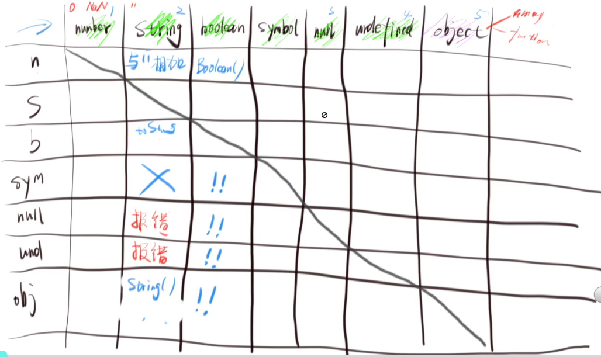
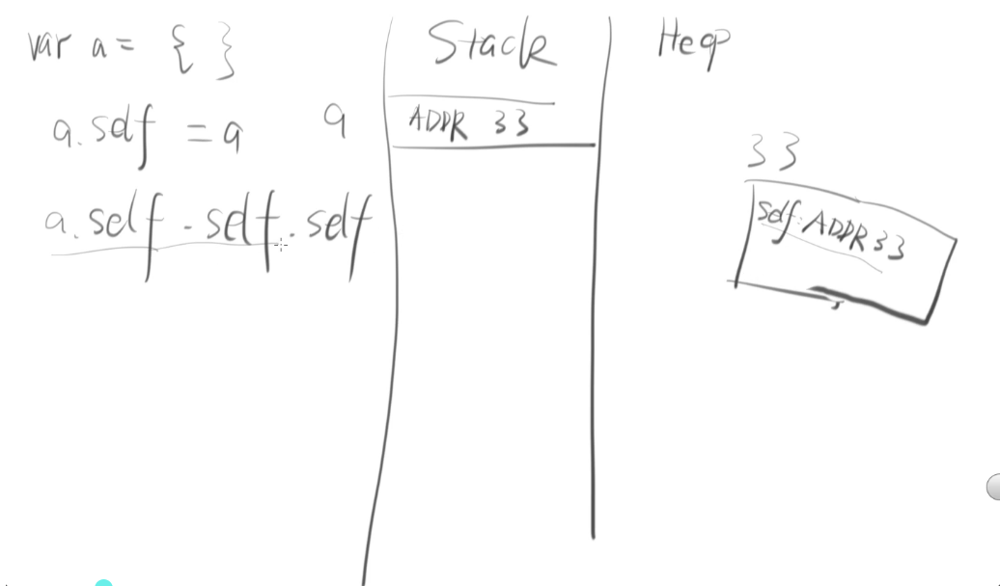
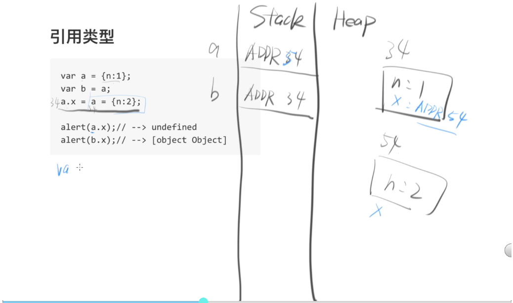
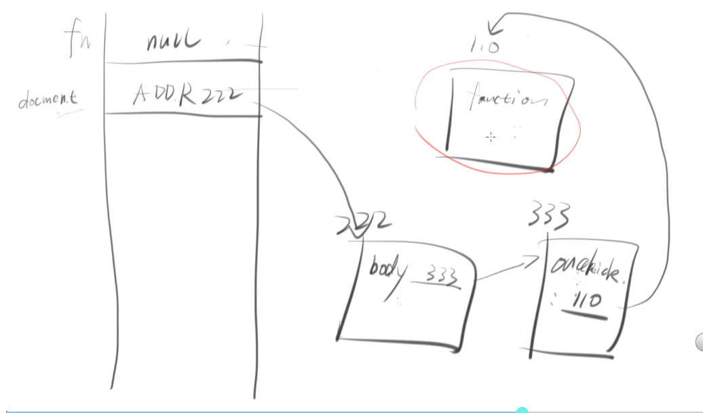

类型转换
js 相关的类型转换见下图

如图所示，与其 symbol 类型以及其之后的转换并不常见，所以本文优先考虑的是前面几种类型的转换
如何转为 string
其实就是其他类型变成字符串的一些操作
虽然是用 toString 方法,但是更常用的是与 ‘’(空字符串) 相加
以及全局函数 window.String()1 + ''
"1"
true + ''
"true"
var obj = {}
undefined
obj + ''
"[object Object]"
'' + null
"null"
'' + undefined
"undefined"
然而有下面的情况1 + '1'
"11"
原因是(1).toString() + '1'
如何转为 Boolean
其他类型转变成 Boolean 的一些操作，就是调用 Boolean() 或者用 !!Boolean(类型值)
!! 类型值
这里有 5 个 falsy 值，就是转成 Boolean 值的时候为 false 的几个值
- 0
- NaN
- ‘’ (空字符串)
- null
- undefined
同样可以搜索 MDN + Falsy
如何转为 number
像这样 ‘1’ —> 1
- Number(‘1’) === 1
- parseInt(‘1’, 10) === 1
- parseFloat(‘1.23’) === 1.23
- ‘1’ - 0 === 1
- +’1’ === 1(取正)
parseInt 语法如下parseInt(string, radix);
这里需要注意的是，string 表式要被解析的值，而 radix 需要转换的基数，这个基数默认是 10,也就是 10 进制parseInt('011')
11
parseInt('011', 10)
11
parseInt('011', 8)
9
内存图
如下图所示
stack 栈内存负责存储声明的变量地址，而 heap 堆内存负责存放相应地址对应的内容,即 hash
以下面这一串代码为例var a = 1
var b = 2
var o = {
name: 'frank',
age: 18
}
var c = true
o.gender = 'male'
代码在运行之前需要做一次变量提升，为什么需要进行变量提升，因为考虑到对象后面会自己加属性值，而按照图中 stack 栈内存来存储数据的方式，整个栈数据需要进行上移或下移的操作，这样会极大的影响性能，为了解决这个 bug，引入了 heap 堆内存，栈内存中只存放对象的地址，这样只需要取到其地址对应的值就可以了
有关 JS 内存的一些的问题var a = 1
var b = a
b = 2
a = ? // a = 1
var a = {name: 'a'}
b = a
b = {name: 'b'} // 这里声明了一个匿名对象,这个匿名对象自己也有个地址
a.name = ? // a.name = 'a'
var a = {name: 'a'}
var b = a
b.name = 'b'
a.name = ? // a.name = 'b'
var a = {name: 'a'}
var b = a
b = null
a = ? // a = {name: 'a'}
还有个循环指向的问题var a = {}
a.self = a
a.self.self.self // 这里被循环指向了
关系见下图

引用类型var a = {n: 1}
var b = a
a.x = a = {n: 2} // 这里最左边的 a 地址没变，中间 a 地址变了
alert(a.x) // --> undefined // 这里是求变了地址的 a.x
alert(b.x) // ---> [object Object]
原因见内存图

GC 垃圾回收问题
如果一个对象没有被引用，它就是垃圾，它将会被回收
一个典型的垃圾回收var a = {name: 'a'}
var b = {name: 'b'}
a = b // 这样原来 a 指向的那片内存就成了垃圾
var fn = function() {}
document.body.onclick = fn
fn = null // fn 不是垃圾回收对象
见下图

那假如把页面关掉，那么 fn 就是垃圾，因为 document 就没有了，其他那些指向都没了
但是 IE6 无法在页面关闭的时候把那些 onclick 标记为垃圾，从而导致内存泄露
浅拷贝和深拷贝
var a = 1 |
对 b 的操作不影响 a，那么就是深拷贝
对于简单类型的数据来说都是深拷贝
对于复杂类型的数据(对象)来说，才区分浅拷贝和深拷贝var a = {name:'a'}
var b = a
b.name = 'b'
a.name === 'a' // false
以上是浅拷贝，因为对 b 的操作影响到 a 了var a = {name:'a'}
var b = deepclone(a) // 这里是深拷贝的相关函数，对 heap 堆内存的完全拷贝
b.name = 'b'
a.name === 'a' // true
以上是深拷贝，因为对 b 的操作没有影响到 a
见下图